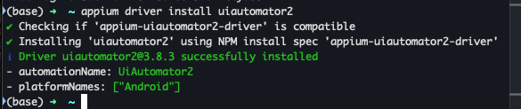
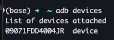
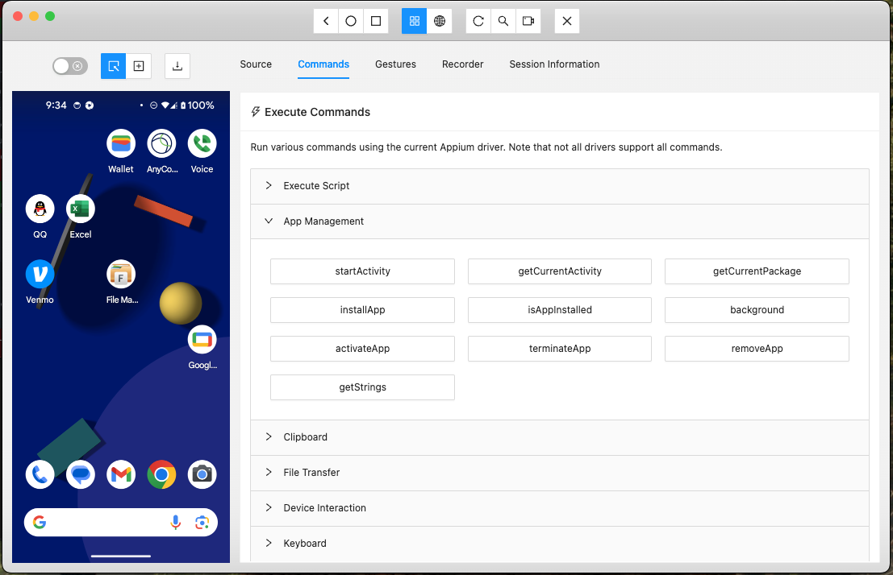

appium
Appium是一个开源项目和相关软件生态系统，旨在促进许多应用程序平台的UI自动化，包括移动端（iOS、Android、Tizen）、浏览器端（Chrome、Firefox、Safari）、桌面端（macOS、Windows）、电视端（Roku、tvOS、Android TV、三星）等！
quick start!
安装 Appium
1 | npm i -g appium |
安装完成后，您应该可以从命令行运行 Appium：
1 | appium |
安装 UiAutomator2 驱动
1 | appium driver install uiautomator2 |

链接安卓手机
直接安装android studio
之后需要在android studio内部安装Android SDK 平台工具
或者直接使用homebrew
1 | brew install --cask android-platform-tools |
链接模拟器
直接使用android studio的 AVD 创建向导创建即可。
链接真机
用usb链接手机并且设置usb调试打开之后
验证链接成功
在命令行中执行以下命令
1 | adb devices |
看到有手机显示就代表连接成功

Python start!
先安装appium python client
1 | pip install Appium-Python-Client |
Battery test!
1 | import unittest |
环境变量设置
然后直接执行battery测试报错
1 | selenium.common.exceptions.WebDriverException: Message: An unknown server-side error occurred while processing the command. Original error: Neither ANDROID_HOME nor ANDROID_SDK_ROOT environment variable was exported. Read https://developer.android.com/studio/command-line/variables for more details |
点击对应链接，查看解决方案将对应环境变量设置进你的系统
1 | export ANDROID_HOME=~/Library/Android/sdk |
然后重新启动appium服务器，重新执行测试
install app
可以执行install_app方法安装apk
1 | self.driver.install_app('/绝对路径或者相对路径') |
remove app
1 | self.driver.remove_app('com.instagram.android') |
appium-inspector 可视化页面分析器
